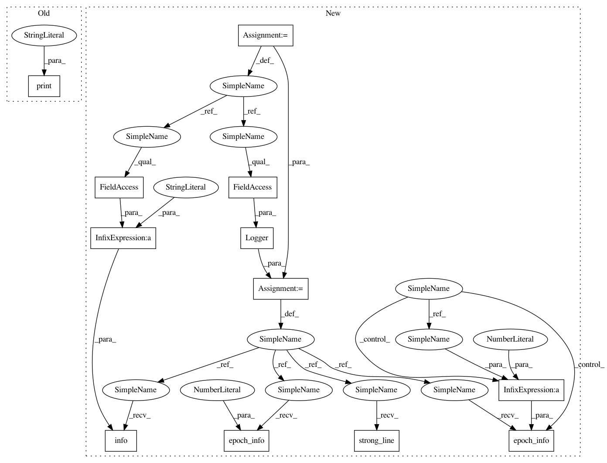

7c6e84bbf65bcbade78e78d6120ca0997dff7c28,examples/pendulum_ddpg.py,,experiment,#Any#Any#Any#Any#,68
Before Change
core.learn(n_steps=n_steps, n_steps_per_fit=1)
dataset = core.evaluate(n_steps=n_steps_test, render=False)
J = compute_J(dataset, gamma)
print("J: ", np.mean(J))
print("Press a button to visualize pendulum")
input()
core.evaluate(n_episodes=5, render=True)
After Change
def experiment(alg, n_epochs, n_steps, n_steps_test):
np.random.seed()
logger = Logger(alg.__name__, results_dir=None)
logger.strong_line()
logger.info("Experiment Algorithm: " + alg.__name__)
use_cuda = torch.cuda.is_available()
// MDP
horizon = 200
gamma = 0.99
mdp = Gym("Pendulum-v0", horizon, gamma)
// Policy
policy_class = OrnsteinUhlenbeckPolicy
policy_params = dict(sigma=np.ones(1) * .2, theta=.15, dt=1e-2)
// Settings
initial_replay_size = 500
max_replay_size = 5000
batch_size = 200
n_features = 80
tau = .001
// Approximator
actor_input_shape = mdp.info.observation_space.shape
actor_params = dict(network=ActorNetwork,
n_features=n_features,
input_shape=actor_input_shape,
output_shape=mdp.info.action_space.shape,
use_cuda=use_cuda)
actor_optimizer = {"class": optim.Adam,
"params": {"lr": .001}}
critic_input_shape = (actor_input_shape[0] + mdp.info.action_space.shape[0],)
critic_params = dict(network=CriticNetwork,
optimizer={"class": optim.Adam,
"params": {"lr": .001}},
loss=F.mse_loss,
n_features=n_features,
input_shape=critic_input_shape,
output_shape=(1,),
use_cuda=use_cuda)
// Agent
agent = alg(mdp.info, policy_class, policy_params,
actor_params, actor_optimizer, critic_params, batch_size,
initial_replay_size, max_replay_size, tau)
// Algorithm
core = Core(agent, mdp)
core.learn(n_steps=initial_replay_size, n_steps_per_fit=initial_replay_size)
// RUN
dataset = core.evaluate(n_steps=n_steps_test, render=False)
J = np.mean(compute_J(dataset, gamma))
R = np.mean(compute_J(dataset))
logger.epoch_info(0, J=J, R=R)
for n in trange(n_epochs, leave=False):
core.learn(n_steps=n_steps, n_steps_per_fit=1)
dataset = core.evaluate(n_steps=n_steps_test, render=False)
J = np.mean(compute_J(dataset, gamma))
R = np.mean(compute_J(dataset))
logger.epoch_info(n+1, J=J, R=R)
logger.info("Press a button to visualize pendulum")
input()
core.evaluate(n_episodes=5, render=True)
In pattern: SUPERPATTERN
Frequency: 3
Non-data size: 12
Instances
Project Name: AIRLab-POLIMI/mushroom
Commit Name: 7c6e84bbf65bcbade78e78d6120ca0997dff7c28
Time: 2021-01-11
Author: boris.ilpossente@hotmail.it
File Name: examples/pendulum_ddpg.py
Class Name:
Method Name: experiment
Project Name: AIRLab-POLIMI/mushroom
Commit Name: 7c6e84bbf65bcbade78e78d6120ca0997dff7c28
Time: 2021-01-11
Author: boris.ilpossente@hotmail.it
File Name: examples/pendulum_sac.py
Class Name:
Method Name: experiment
Project Name: AIRLab-POLIMI/mushroom
Commit Name: 8896f02f94da16afe5b3ea5330e4f99245b75d6b
Time: 2021-01-08
Author: boris.ilpossente@hotmail.it
File Name: examples/lqr_pg.py
Class Name:
Method Name: experiment